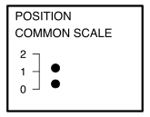
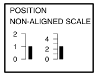
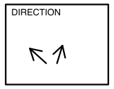
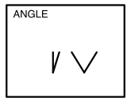
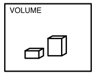
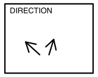
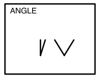
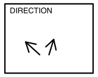
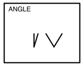

Is there any pattern in the residuals that indicate a problem with the model fit?
Do we need to change the model specification?
Why (2/3)
Is there a difference between the species?
Why (3/3)
Which is the best display to answer: what is distribution of thyroid cancer across Australia?
What’s the goal?
Reading data plots is subjective.
Making decisions based on data visualisations is common, where we need to be objective .
It is possible, and here is how we do that …
Outline
Organising your data into tidy form
Mapping the variables to elements of the plot
Cognitive preinciples: briefly
Testing the strength of patterns in the plot
Testing which is the best design
These are the tools you need
install.packages("ggplot2")
or better yet:
install.packages("tidyverse")
Define your plots using a grammar that maps variables in tidy data to elements of the plot.
Wrangle your data into tidy form for clarity of plot specification.
space
install.packages("nullabor")
Compare your data plot to plots of null data.
This checks whether what we see is real or spurious.
Also allows for measuring the effectiveness of one plot design vs another.
Organising your data to enable mapping variables to graphical elements
Tidy data
Each variable forms a column
Each observation forms a row
Each type of observational unit forms a table. If you have data on multiple levels (e.g. data about houses and data about the rooms within those houses), these should be in separate tables.
Illustrations from the Openscapes blog Tidy Data for reproducibility, efficiency, and collaboration by Julia Lowndes and Allison Horst
QUESTION
How would you get this data into tidy form?
Tuberculosis from WHO
Tidying
First get the data in tidy form
tb_aus_sa <- tb_aus |>filter(year >2012) |>select(iso3, year, newrel_f014:newrel_f65, newrel_m014:newrel_m65) |>pivot_longer(cols=newrel_f014:newrel_m65,names_to ="sex_age", values_to ="count") |>filter(!is.na(count)) |>separate(sex_age, into=c("stuff", "sex_age")) |>mutate(sex =str_sub(sex_age, 1, 1),age =str_sub(sex_age, 2, str_length(sex_age))) |>mutate(age =case_when( age =="014"~"0-14", age =="1524"~"15-24", age =="2534"~"25-34", age =="3544"~"35-44", age =="4554"~"45-54", age =="5564"~"55-64", age =="65"~"65")) |>select(iso3, year, sex, age, count)
Small increasing temporal trend is present in early age groups, for both males and females. Also older groups, although numbers are much smaller.
Tidy data to plot descriptions allows quick re-arrangment, and clearly shows relationship between plots
Cognitive principles
Hierarchy of mappings


Cleveland and McGill (1984)
Illustrations made by Emi Tanaka
Hierarchy of mappings
Position - common scale (BEST)
Position - nonaligned scale
Length, direction, angle
Area
Volume, curvature
Shading, color (WORST)
scatterplot, barchart
side-by-side boxplot, stacked barchart
piechart, rose plot, gauge plot, donut, wind direction map, starplot
treemap, bubble chart, mosaicplot
chernoff face
choropleth map
Proximity
Place elements that you want to compare close to each other. If there are multiple comparisons to make, you need to decide which one is most important.
Change blindness
Making comparisons across plots requires the eye to jump from one focal point to another. It may result in not noticing differences.
Scaling
For comparison of different patterns, consider the scale. Typically the scale should be the SAME in each plot.
facet_wrap(..., scales="free_y")
Statistical thinking
Statistical thinking
Because the plot is specified using a functional mapping of the variables, it is a statistic.
The null and alternative hypotheses are indicated from the plot description.
Applying the function to a dataset provides the observed value.
\(H_o\): There is no relationship between residuals and fitted values.
How would you generate null samples?
Break any association by
permuting residuals,
or residual rotation,
or simulate residuals from a normal distribution.
Conducting a lineup test
Steps
Create a lineup of \(m-1\) null plots + 1 data plot, where the data plot is randomly placed among nulls. Remove any distracting information, like tick labels, titles.
Ask uninvolved observer(s) to pick the plot that is most different. (May need to use a crowd-sourcing service.)
Compute the probability that the data plot was chosen, assuming it is no different from the null plots. This is the \(p\)-value.
If 10 people are shown this lineup and all 10 pick plot 2, which is the data plot, the \(p\)-value will be 0.
Generally, we can compute the probability that the data plot is chosen by \(x\) out of \(K\) observers, shown a lineup of \(m\) plots, using a simulation approach that extends from a binomial distribution, with \(p=1/m\).
pvisual(10, 10, 15)
x simulated binom
[1,] 10 0 1.734168e-12
This means we would reject \(H_o\) and conclude that there is a difference in the distribution of bill length and flipper length between the species of penguins.
Compute the \(p\)-value based on your responses to the lineup (previous slide).
pvisual(n=??, k=??, m=15)
Testing for best plot design
Steps
Decide on plot descriptions, say two possibilities.
Using the same data, and same null data create lineups that only differ because of the plot description.
Show each lineup to two samples of uninvolved observers (one observer cannot see both lineups).
Compute the proportion of each sample who identified the data plot, this is the signal strength or statistical power of each plot design. Also can be evaluated on time to detect the data plot.
The plot with the greater value (or shorter time) is the best design (for that problem).
If your birthday is between Jan 1 and Jun 30, CLOSE YOUR EYES NOW
Hofmann, Follett, Majumder, Cook (2012) Graphical Tests for Power Comparison of Competing Designs, IEEE TVCG, https://doi.org/10.1109/TVCG.2012.230.
Buja, Cook, Hofmann, Lawrence, Lee EK, Swayne, Wickham (2009) Statistical inference for exploratory data analysis and model diagnostics, https://doi.org/10.1098/rsta.2009.0120.
Majumder, Hofmann, Cook (2013) Validation of visual statistical inference, applied to linear models, https://doi.org/10.1080/01621459.2013.808157.
VanderPlas, Rottger, Cook, Hofmann (2021) Statistical significance calculations for scenarios in visual inference, https://doi.org/10.1002/sta4.337.


![This is an untitled chart with no subtitle or caption. It has x-axis flipper_length_mm with labels 170, 180, 190, 200, 210, 220 and 230. It has y-axis bill_length_mm with labels 40, 50 and 60. There is a legend indicating colour is used to show species, with 3 levels: Adelie shown as brilliant greenish blue colour, Chinstrap shown as brilliant yellow colour and Gentoo shown as vivid red colour. The chart is a set of 342 big solid circle points of which about 92% can be seen. It has alpha set to 0.8. The three species form clusters, but they are not separated. Adelie is at low left, Gentoo is upper right, and Chinstrap is middle and mid-to-upper positions.](slides_files/figure-revealjs/penguins1-1.png)


 



![This is an untitled chart with no subtitle or caption. It has x-axis flipper_length_mm with labels 170, 180, 190, 200, 210, 220 and 230. It has y-axis bill_length_mm with labels 40, 50 and 60. There is a legend indicating colour is used to show species, with 3 levels: Adelie shown as brilliant greenish blue colour, Chinstrap shown as brilliant yellow colour and Gentoo shown as vivid red colour. The chart is a set of 342 big solid circle points of which about 92% can be seen. It has alpha set to 0.8. The three species form clusters, but they are not separated. Adelie is at low left, Gentoo is upper right, and Chinstrap is middle and mid-to-upper positions.](slides_files/figure-revealjs/unnamed-chunk-32-1.png)